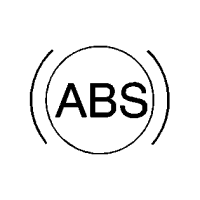
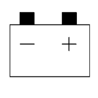
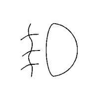
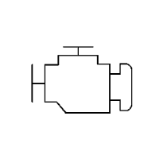
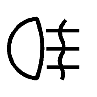

Cruze |
||||||||
|
|
|
|||||||
| Tabla 1: | Indicadores del cuadro de instrumentos |
| Tabla 2: | Código de aviso del centro de información del conductor |
| Tabla 3: | Mensajes de aviso del centro de información del conductor |
Símbolo | Referencia |
|---|---|
|
 | |
|
| |
|
| Freno: Descripción y funcionamiento del sistema de advertencia de frenos → sin sistema de frenado antibloqueo → con sistema de frenado antibloqueo |
|
| Freno: Descripción y funcionamiento del sistema de advertencia de frenos → sin sistema de frenado antibloqueo → con sistema de frenado antibloqueo |
|
 | |
|
| Control de la velocidad de crucero: Descripción y funcionamiento del control de crucero |

| El cuadro de instrumentos muestra el indicador de baja presión del aceite del motor según lo determinado por el módulo de control del motor (ECM). El ECM supervisa el circuito de señal del sensor/interruptor de presión del aceite de motor para determinar la presión del aceite. El ECM envía la información de la presión del aceite de motor al módulo de control de la carrocería (BCM) a través del circuito de datos serie. El cuadro de instrumentos recibe un mensaje de datos serie del BCM solicitando la indicación de la presión del aceite de motor por parte del ECM. Cuando el cuadro de instrumentos detecta que la presión es baja, enciende el indicador de presión baja. |
|
| Fijación del cinturón de seguridad: Descripción y funcionamiento del sistema de cinturones de seguridad |
|
 | Luces antiniebla delanteras: Descripción y funcionamiento de los sistemas de iluminación exterior |

| Luces de carretera: Descripción y funcionamiento de los sistemas de iluminación exterior |
|
| Servicio de estacionamiento asistido: Descripción y operación de la detección de objetos |
|
| Aviso de luces encendidas: Descripción y funcionamiento de los sistemas de iluminación exterior |
|
 | Testigo luminoso de avería: |
|
 | Luces antiniebla traseras: Descripción y funcionamiento de los sistemas de iluminación exterior |
|
| |
|
| Intermitentes: Descripción y funcionamiento de los sistemas de iluminación exterior |
|
| Control de estabilidad electrónica: Descripción y funcionamiento del ABS |
|
| Control de estabilidad electrónica desactivado: Descripción y funcionamiento del ABS |
|
| Control de tracción desactivado: Descripción y funcionamiento del ABS |
|
| Puerta entreabierta: Descripción y funcionamiento de las cerraduras eléctricas |
|
| Para aplicar el freno: Descripción y funcionamiento del sistema de arranque |
|
| Reparar vehículo pronto: Consultar Descripción y operación del indicador/mensaje de aviso |
|
| Bujía de incandescencia: Descripción del Sistema de Bujías de Incandescencia |
Código | Explicación | Referencia | ||||||
|---|---|---|---|---|---|---|---|---|
1 | Indicador de cambio de aceite |
| ||||||
2 | No se ha detectado mando a distancia, pisar embrague para volver a arrancar | |||||||
3 | Nivel de refrigerante bajo | |||||||
4 | Aire acondicionado apagado | |||||||
5 | Columna de dirección bloqueada | Descripción y funcionamiento del volante y de la columna de dirección | ||||||
7 | Girar el volante, poner la llave de contacto en la posición OFF y luego en ON | Descripción y funcionamiento del volante y de la columna de dirección | ||||||
8 | Girar la llave de contacto a la posición OFF y luego a ON; repetir la comprobación de respiración | Descripción y funcionamiento del volante y de la columna de dirección | ||||||
9 | Girar el volante y volver a arrancar el vehículo | Descripción y funcionamiento del volante y de la columna de dirección | ||||||
10 | Frenos sobrecalentados | Descripción y funcionamiento del sistema de advertencia de frenos → sin sistema de frenado antibloqueo → con sistema de frenado antibloqueo | ||||||
11 | Frenos desgastados | Descripción y funcionamiento del sistema de advertencia de frenos → sin sistema de frenado antibloqueo → con sistema de frenado antibloqueo | ||||||
15 | Avería de la luz de freno de montaje superior | Descripción y funcionamiento de los sistemas de iluminación exterior | ||||||
16 | Luces de freno de servicio | Descripción y funcionamiento de los sistemas de iluminación exterior | ||||||
17 | Fallo de funcionamiento de la nivelación de los faros; ponerse en contacto con el servicio técnico | Descripción y funcionamiento de los sistemas de iluminación exterior | ||||||
18 | Avería de la luz de cruce izquierda | Descripción y funcionamiento de los sistemas de iluminación exterior | ||||||
19 | Avería de las luces antiniebla traseras | Descripción y funcionamiento de los sistemas de iluminación exterior | ||||||
20 | Avería de la luz de cruce derecha | Descripción y funcionamiento de los sistemas de iluminación exterior | ||||||
21 | Avería de la luz de posición delantera izquierda | Descripción y funcionamiento de los sistemas de iluminación exterior | ||||||
22 | Avería de la luz de posición delantera derecha | Descripción y funcionamiento de los sistemas de iluminación exterior | ||||||
23 | Avería de la luz de marcha atrás | Descripción y funcionamiento de los sistemas de iluminación exterior | ||||||
24 | Avería de la luz de la matrícula | Descripción y funcionamiento de los sistemas de iluminación exterior | ||||||
25 | Avería del intermitente delantero izquierdo | Descripción y funcionamiento de los sistemas de iluminación exterior | ||||||
26 | Avería del intermitente delantero trasero | Descripción y funcionamiento de los sistemas de iluminación exterior | ||||||
27 | Avería del intermitente delantero derecho | Descripción y funcionamiento de los sistemas de iluminación exterior | ||||||
28 | Avería del intermitente trasero derecho | Descripción y funcionamiento de los sistemas de iluminación exterior | ||||||
29 | Comprobar luz de freno del remolque | Descripción y funcionamiento de los sistemas de iluminación exterior | ||||||
30 | Comprobar luz de marcha atrás del remolque | Descripción y funcionamiento de los sistemas de iluminación exterior | ||||||
31 | Comprobar luz del intermitente izquierdo del remolque | Descripción y funcionamiento de los sistemas de iluminación exterior | ||||||
32 | Comprobar luz del intermitente derecho del remolque | Descripción y funcionamiento de los sistemas de iluminación exterior | ||||||
33 | Comprobar luz antiniebla trasera del remolque | Descripción y funcionamiento de los sistemas de iluminación exterior | ||||||
34 | Comprobar luz trasera del remolque | Descripción y funcionamiento de los sistemas de iluminación exterior | ||||||
35 | Sustituir la pila del mando a distancia | Descripción y funcionamiento del sistema de apertura con mando a distancia → con ATS → con ATG | ||||||
48 | Limpiar aviso de zona ciega lateral | |||||||
50 | Reajustar capó; ver manual del propietario | |||||||
54 | Agua en el combustible; ponerse en contacto con el servicio técnico |
| ||||||
55 | Reparar filtro de partículas diésel | |||||||
59 | Abrir y cerrar ventanilla del conductor | |||||||
60 | Abrir y cerrar ventanilla de acompañante delantera | |||||||
61 | Abrir y cerrar ventanilla de acompañante trasera izquierda | |||||||
62 | Abrir y cerrar ventanilla de acompañante trasera derecha | |||||||
65 | Intento de robo | |||||||
66 | Reparar alarma antirrobo | |||||||
67 | Reparar bloqueo de la columna de dirección | |||||||
68 | Reparar dirección asistida | |||||||
70 | Reparar sistema de nivelación | Descripción y funcionamiento de los sistemas de iluminación exterior | ||||||
75 | Reparar sistema de A/C | |||||||
76 | Reparar aviso de zona ciega lateral | |||||||
78 | Reparar sistema de protección de peatones | |||||||
79 | Aceite de motor bajo; añadir aceite | Consultar Descripción y operación del indicador/mensaje de aviso | ||||||
80 | Cambiar aceite de la caja de cambios | |||||||
81 | Reparar caja de cambios | |||||||
82 | Cambiar pronto el aceite del motor | Consultar Descripción y operación del indicador/mensaje de aviso | ||||||
84 | Se reduce la potencia del motor |
| ||||||
95 | Reparar airbag | |||||||
99 | Sistema de protección de peatones inhabilitado |
Mensaje | Referencia | ||||||
|---|---|---|---|---|---|---|---|
Cambio 1ª - 4ª | Descripción y funcionamiento del control de bloqueo de cambio de caja de cambios automática | ||||||
AC desactivado debido a temp. alta del motor | |||||||
Aplicar freno antes de control de velocidad crucero | |||||||
Ajuste automático de cinturón de seguridad no disponible | Descripción y funcionamiento del sistema de cinturones de seguridad | ||||||
Nivel de líquido de frenos bajo | Descripción y funcionamiento del sistema de advertencia de frenos → sin sistema de frenado antibloqueo → con sistema de frenado antibloqueo | ||||||
Frenos sobrecalentados | Descripción y funcionamiento del sistema de advertencia de frenos → sin sistema de frenado antibloqueo → con sistema de frenado antibloqueo | ||||||
Frenos desgastados | Descripción y funcionamiento del sistema de advertencia de frenos → sin sistema de frenado antibloqueo → con sistema de frenado antibloqueo | ||||||
Abrochar cinturón de seguridad del acompañante | Descripción y funcionamiento del sistema de cinturones de seguridad | ||||||
Abrochar cinturón de acompañante en parte trasera central | Descripción y funcionamiento del sistema de cinturones de seguridad | ||||||
Abrochar cinturón de acompañante en parte trasera izquierda | Descripción y funcionamiento del sistema de cinturones de seguridad | ||||||
Abrochar cinturón de acompañante en parte trasera derecha | Descripción y funcionamiento del sistema de cinturones de seguridad | ||||||
Abrochar cinturón de seguridad | Descripción y funcionamiento del sistema de cinturones de seguridad | ||||||
Cambiar filtro del A/C | |||||||
Cambiar pronto el aceite del motor | Consultar Descripción y operación del indicador/mensaje de aviso | ||||||
Cambiar filtro de combustible |
| ||||||
Cambiar aceite de la caja de cambios | |||||||
Comprobar luz trasera de marcha atrás | Descripción y funcionamiento de los sistemas de iluminación exterior | ||||||
Comprobar luces de freno | Descripción y funcionamiento de los sistemas de iluminación exterior | ||||||
Comprobar luz de freno de montaje superior | Descripción y funcionamiento de los sistemas de iluminación exterior | ||||||
Comprobar luz izquierda de circulación diurna | Descripción y funcionamiento de los sistemas de iluminación exterior | ||||||
Comprobar luz del intermitente delantero izquierdo | Descripción y funcionamiento de los sistemas de iluminación exterior | ||||||
Comprobar luz de cruce izquierda | Descripción y funcionamiento de los sistemas de iluminación exterior | ||||||
Comprobar luz de posición izquierda | Descripción y funcionamiento de los sistemas de iluminación exterior | ||||||
Comprobar luz de estacionamiento izquierda | Descripción y funcionamiento de los sistemas de iluminación exterior | ||||||
Comprobar luz del intermitente trasero izquierdo | Descripción y funcionamiento de los sistemas de iluminación exterior | ||||||
Comprobar luz del intermitente izquierdo del remolque | Descripción y funcionamiento de los sistemas de iluminación exterior | ||||||
Comprobar luz de matrícula | Descripción y funcionamiento de los sistemas de iluminación exterior | ||||||
Comprobar luz antiniebla trasera | Descripción y funcionamiento de los sistemas de iluminación exterior | ||||||
Comprobar luz de marcha atrás | Descripción y funcionamiento de los sistemas de iluminación exterior | ||||||
Comprobar luz derecha de circulación diurna | Descripción y funcionamiento de los sistemas de iluminación exterior | ||||||
Comprobar luz del intermitente delantero derecho | Descripción y funcionamiento de los sistemas de iluminación exterior | ||||||
Comprobar luz de cruce derecha | Descripción y funcionamiento de los sistemas de iluminación exterior | ||||||
Comprobar luz de posición derecha | Descripción y funcionamiento de los sistemas de iluminación exterior | ||||||
Comprobar luz de estacionamiento derecha | Descripción y funcionamiento de los sistemas de iluminación exterior | ||||||
Comprobar luz del intermitente trasero derecho | Descripción y funcionamiento de los sistemas de iluminación exterior | ||||||
Comprobar luz del intermitente derecho del remolque | Descripción y funcionamiento de los sistemas de iluminación exterior | ||||||
Comprobar luz de freno del remolque | Descripción y funcionamiento de los sistemas de iluminación exterior | ||||||
Comprobar luz antiniebla trasera del remolque | Descripción y funcionamiento de los sistemas de iluminación exterior | ||||||
Comprobar luz trasera del remolque | Descripción y funcionamiento de los sistemas de iluminación exterior | ||||||
Comprobar luz de marcha atrás del remolque | Descripción y funcionamiento de los sistemas de iluminación exterior | ||||||
Nivel de refrigerante bajo; añadir refrigerante | |||||||
Velocidad de crucero ajustada en | |||||||
Apagado del motor diésel | |||||||
Apagado en breve del motor diésel | |||||||
Puerta entreabierta | Descripción y funcionamiento del indicador de puerta entreabierta | ||||||
Puerta del conductor abierta | Descripción y funcionamiento del indicador de puerta entreabierta | ||||||
Asiento de conductor desbloqueado | Descripción y funcionamiento del sistema de asientos eléctricos | ||||||
Aceite de motor caliente; poner motor en ralentí | |||||||
Aceite de motor bajo; añadir aceite | Consultar Descripción y operación del indicador/mensaje de aviso | ||||||
Motor sobrecalentado; poner motor en ralentí | |||||||
Motor sobrecalentado; parar motor | |||||||
Velocidad excesiva del motor |
| ||||||
Se reduce la potencia del motor |
| ||||||
Modo competitivo del ESP | |||||||
Fallo de funcionamiento de la nivelación de los faros; ponerse en contacto con el servicio técnico | Descripción y funcionamiento de los sistemas de iluminación exterior | ||||||
Líquido de lavado caliente; barridos de lavado pendientes | Descripción y funcionamiento del sistema limpia/lavaparabrisas | ||||||
Sistema de líquido de lavado caliente desactivado | Descripción y funcionamiento del sistema limpia/lavaparabrisas | ||||||
Temperatura del refrigerante alta | |||||||
Capó entreabierto | |||||||
Puerta abierta | |||||||
Introducir nuevo mando a distancia, pulsar botón de arranque | Descripción y funcionamiento del sistema de apertura con mando a distancia → con ATS → con ATG | ||||||
Batería baja | |||||||
No se ha detectado mando a distancia | Descripción y funcionamiento del sistema de apertura con mando a distancia → con ATS → con ATG | ||||||
No se ha detectado mando a distancia, pisar freno para volver a arrancar | |||||||
No se ha detectado mando a distancia, pisar embrague para volver a arrancar | |||||||
Presión de aceite baja; parar motor | Consultar Descripción y operación del indicador/mensaje de aviso | ||||||
Abrir y cerrar ventanilla del conductor | |||||||
Abrir y cerrar ventanilla del conductor | |||||||
Abrir y cerrar ventanilla de puerta de extremo | |||||||
Abrir y cerrar ventanilla trasera izquierda | |||||||
Abrir y cerrar ventanilla trasera izquierda | |||||||
Abrir y cerrar ventanilla de puerta intermedia | |||||||
Abrir y cerrar ventanilla de acompañante | |||||||
Abrir y cerrar ventanilla de acompañante | |||||||
Abrir y cerrar ventanilla trasera izquierda | |||||||
Abrir y cerrar ventanilla trasera izquierda | |||||||
Abrir y cerrar ventanilla del techo corredizo | |||||||
Abrir y cerrar ventanilla Xx | |||||||
Paragolpes trasero sin averías de estacionamiento asistido | |||||||
El filtro de partículas está lleno. Consultar manual del propietario | |||||||
Puerta de pasajero abierta | Descripción y funcionamiento del indicador de puerta entreabierta | ||||||
Asiento delantero de acompañante desbloqueado | Descripción y funcionamiento del sistema de asientos eléctricos | ||||||
Sistema de protección de peatones inhabilitado | |||||||
Pisar el freno para arrancar el motor | |||||||
Volver a pulsar el botón para apagar el motor | |||||||
Pisar el embrague para arrancar el motor | |||||||
Pulsar el botón de arranque del motor para programar | Descripción y funcionamiento del sistema de apertura con mando a distancia → con ATS → con ATG | ||||||
Pulsar el botón de reanudación dos veces para reanudar la velocidad de crucero tras parar | |||||||
Programar cuadro | Consultar Descripción y operación del indicador/mensaje de aviso | ||||||
Respaldo de asiento trasero izquierdo desbloqueado | Descripción y funcionamiento del sistema de asientos eléctricos | ||||||
Respaldo de asiento trasero derecho desbloqueado | Descripción y funcionamiento del sistema de asientos eléctricos | ||||||
Cinturones de seguridad traseros abrochados | Descripción y funcionamiento del sistema de cinturones de seguridad | ||||||
Cinturones de seguridad traseros desabrochados | Descripción y funcionamiento del sistema de cinturones de seguridad | ||||||
Recordatorio: Mando a distancia dejado en el vehículo | Descripción y funcionamiento del sistema de apertura con mando a distancia → con ATS → con ATG | ||||||
Programación activa del mando a distancia | Descripción y funcionamiento del sistema de apertura con mando a distancia → con ATS → con ATG | ||||||
Programación finalizada del mando a distancia | Descripción y funcionamiento del sistema de apertura con mando a distancia → con ATS → con ATG | ||||||
Arranque remoto interrumpido | |||||||
Sustituir la batería con el mando a distancia | Descripción y funcionamiento del sistema de apertura con mando a distancia → con ATS → con ATG | ||||||
Puerta trasera derecha abierta | Descripción y funcionamiento del indicador de puerta entreabierta | ||||||
Reparar sistema de A/C | |||||||
Reparar airbag | |||||||
Reparar ajuste automático de cinturón de seguridad | Descripción y funcionamiento del sistema de cinturones de seguridad | ||||||
Reparar sistema de carga de la batería | |||||||
Reparar sensor de aplicación de los frenos | Descripción y funcionamiento de los sistemas de iluminación exterior | ||||||
Reparar asistencia a la frenada | |||||||
Reparar ESP | |||||||
Reparar sistema de nivelación | Descripción y funcionamiento de los sistemas de iluminación exterior | ||||||
Reparar sistema de protección de peatones | |||||||
Reparar dirección asistida | |||||||
Reparar estacionamiento asistido/freno automático trasero | |||||||
Reparar StabiliTrak | |||||||
Reparar bloqueo de la columna de dirección | Descripción y funcionamiento del volante y de la columna de dirección | ||||||
Reparar alarma antirrobo | |||||||
Reparar sistema antirrobo | |||||||
Reparar pronto el acelerador |
| ||||||
Reparar control de tracción | |||||||
Reparar caja de cambios | |||||||
Ajustar velocidad | |||||||
Cambio denegado | Descripción y funcionamiento del control de bloqueo de cambio de caja de cambios automática | ||||||
Cambiar a Park | Descripción y funcionamiento del control de bloqueo de cambio de caja de cambios automática | ||||||
Cambiar a Park antes de salir | |||||||
Cambiador bloqueado; abrochar cinturón de seguridad | Descripción y funcionamiento del control de bloqueo de cambio de caja de cambios automática | ||||||
Cambiador desbloqueado; frenar para cambiar | Descripción y funcionamiento del control de bloqueo de cambio de caja de cambios automática | ||||||
Velocidad limitada a | |||||||
Arranque inhabilitado; reparar acelerador |
| ||||||
Columna de dirección bloqueada | Descripción y funcionamiento del volante y de la columna de dirección | ||||||
Intento de robo | |||||||
Caja de cambios caliente; poner motor en ralentí | |||||||
Fusible de transporte quitado | Descripción y funcionamiento de la gestión de energía eléctrica | ||||||
Maletero abierto | |||||||
Maletero, portón trasero o acceso trasero abiertos | |||||||
Girar la llave de contacto a la posición OFF y luego a ON; repetir la comprobación de respiración | Descripción y funcionamiento del volante y de la columna de dirección | ||||||
Intermitente activado | Descripción y funcionamiento de los sistemas de iluminación exterior | ||||||
Girar el volante, poner la llave de contacto en la posición OFF y luego en ON | Descripción y funcionamiento del volante y de la columna de dirección | ||||||
Girar el volante y volver a arrancar el vehículo | Descripción y funcionamiento del volante y de la columna de dirección | ||||||
Sobrevelocidad del vehículo | Consultar Descripción y operación del indicador/mensaje de aviso | ||||||
Nivel de líquido del lavaparabrisas bajo; añadir líquido | Descripción y funcionamiento del sistema limpia/lavaparabrisas | ||||||
Agua en el combustible; ponerse en contacto con el servicio técnico | Descripción del sistema de combustible para LXV o 2H0 |
El centro de información del conductor muestra el mensaje Cambiar pronto aceite del motor cuando el módulo de control del motor (ECM) determina que la vida útil del aceite no llega al 5%. El ECM envía un mensaje de datos serie al cuadro de instrumentos solicitando el mensaje Cambiar pronto aceite del motor. Una vez cambiado el aceite, se reinicia la supervisión del aceite del motor. Consultar Reinicio del sistema de vida útil del aceite de GM .
| • | Cuando se muestre el mensaje Nivel de aceite de motor bajo/Cambiar pronto aceite del motor en el centro de información del conductor porque haya poco aceite en el motor, asegúrese de que la llave de encendido está en posición OFF antes de añadir o cambiar el aceite del vehículo. De lo contrario, dicho mensaje no desaparecerá incluso después de que el nivel de aceite del motor vuelva a ser correcto. |
| • | Antes de sustituir el cuadro de instrumentos porque el mensaje Nivel de aceite de motor bajo/Cambiar pronto aceite del motor no desaparezca tras haber añadido o cambiado el aceite, el motor debe someterse a un proceso de ciclo termodinámico. Es posible que el cuadro de instrumentos no esté averiado, sino que sólo haya que desactivar el mensaje Nivel de aceite de motor bajo/Cambiar pronto aceite del motor. Una vez cambiado el aceite, se reinicia la supervisión del aceite del motor. Consultar Reinicio del sistema de vida útil del aceite de GM . |
El centro de información del conductor muestra el mensaje "Aceite de motor bajo; añadir aceite" cuando el ECM detecta un estado bajo del nivel del aceite de motor procedente del sensor/interruptor del nivel de aceite de motor. El ECM envía un mensaje de "CAN-Bus de alta velocidad" al módulo de control de la carrocería (BCM). A continuación, el BCM envía un mensaje de baja velocidad por bus CAN al cuadro de instrumentos solicitando que se muestre el mensaje Aceite de motor bajo; añadir aceite en el centro de información del conductor.
El centro de información del conductor muestra el mensaje "Presión de aceite baja; parar motor" cuando el ECM detecta un estado bajo de la presión de aceite del motor procedente del sensor/interruptor de presión de aceite del motor. El ECM envía un mensaje de "CAN-Bus de alta velocidad" al (BCM). A continuación, el BCM envía un mensaje de baja velocidad por bus CAN al cuadro de instrumentos solicitando que se muestre el mensaje Presión de aceite baja; parar motor en el centro de información del conductor.
El centro de información del conductor muestra un mensaje Programar cuadro cuando el cuadro de instrumentos necesita ser programado. El cuadro de instrumentos tiene que programarse después de ser sustituido o siempre que aparezca este mensaje en el centro de información del conductor. El cuadro de instrumentos debe programarse y configurarse con el sistema de programación de servicio (SPS). Consultar Referencias del módulo de control
El centro de información del conductor muestra el indicador Reparar vehículo pronto cuando el ECM detecta determinados fallos de funcionamiento que no están relacionados con el sistema de emisiones o cuando otros módulos detectan fallos que requieren la reparación del vehículo. El cuadro de instrumentos recibe mensajes de datos serie procedentes de diversos módulos que solicitan la visualización del indicador Reparar vehículo pronto.
El centro de información del conductor muestra un mensaje "Exceso de velocidad del vehículo" cuando el cuadro de instrumentos determina que se supera el límite de exceso de velocidad fijado en en la pantalla del centro de información del conductor, en caso de estar activada la función de exceso de velocidad del vehículo.
| © Copyright Chevrolet Europe. All rights reserved |